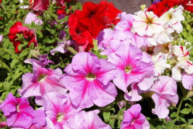

|  |
Hace ya tiempo que hablar de petunias es introducirse en todo un mundo de variedades y tipos y lo podemos ver simplemente paseando por las secciones de plantas de exterior de los centros de jardinería, grandes superficies, floristerías, agricentros y demás puntos de venta especializados. Son las estrellas del balcón y terrazas, del jardín tanto público como privado… las petunias son unas de las plantas con más floración y diversidad de colores entre las plantas ornamentales de su grupo. |
|
Todos los tipos de petunias se engloban dentro del grupo de plantas de temporada de primavera – verano, si bien y fruto de una apuesta de los viveros, actualmente se comercializan desde primeros de primavera hasta bien entrado el otoño. En todo caso sigue siendo una planta anual. El trabajo de las empresas genetistas han dado como resultado a un importante grupo de diferentes clases de petunia, si bien todas ellas proceden de selecciones, cruces o híbridos de las especies Petunias axilaris, Petunias inflata y Petunias violaceae. Todas ellas pertenecen a la familia Solanaceae y se comercializan conjuntamente en las zonas de exposición de los puntos de venta y durante el mismo período del año. |
|